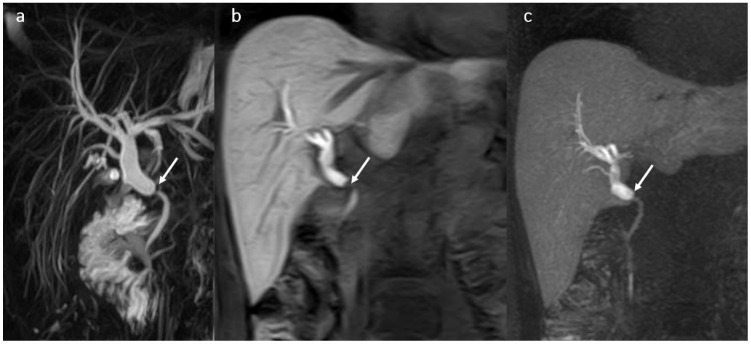
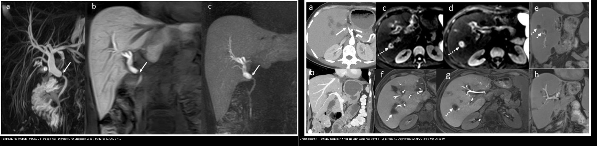
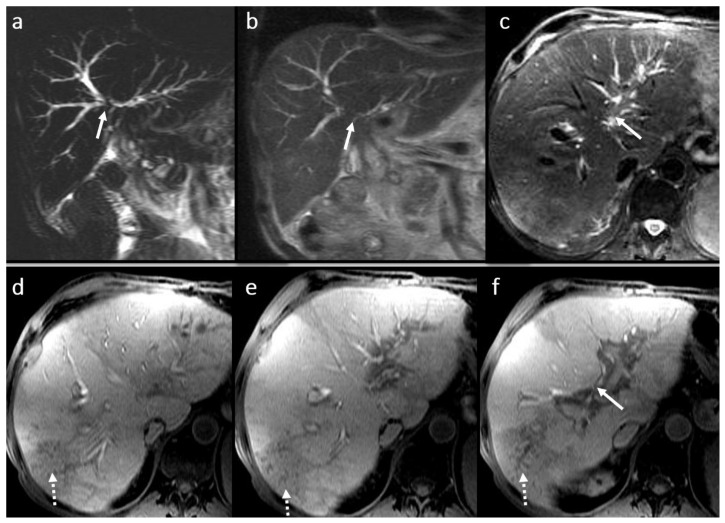
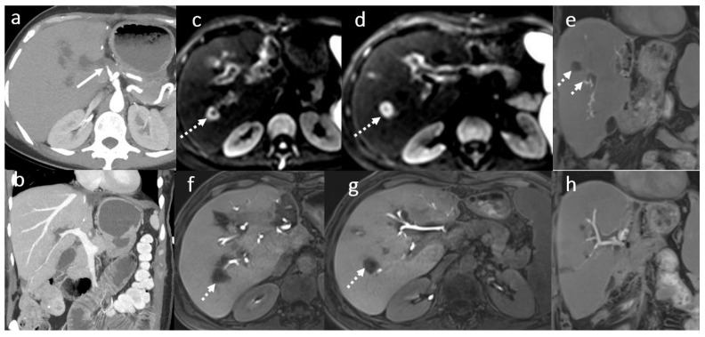
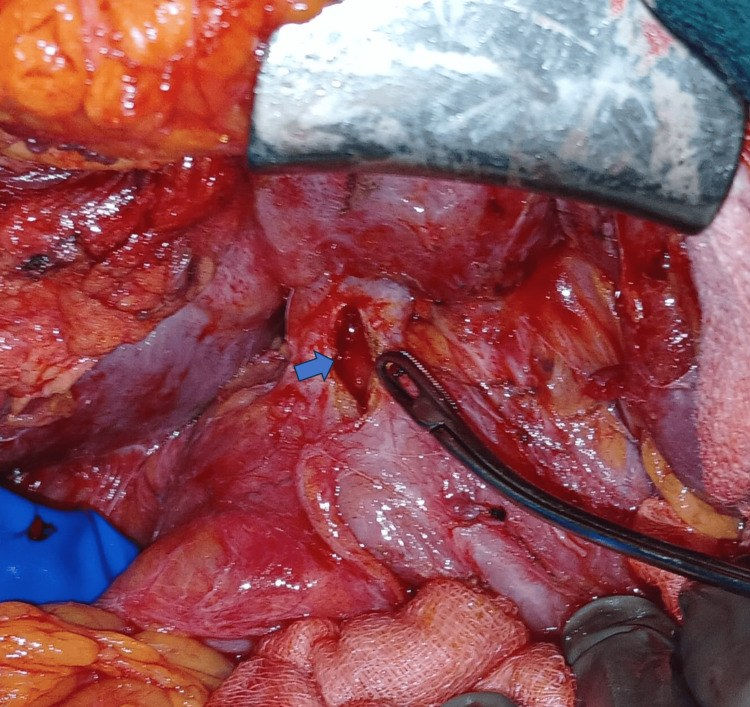
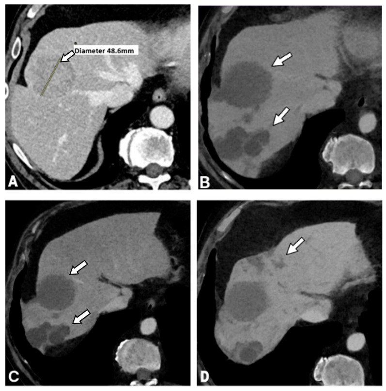
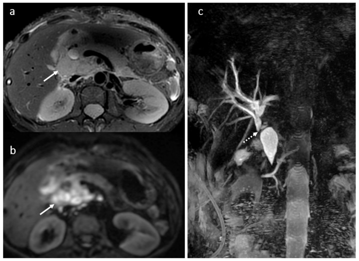

133 — Hẹp miệng nối đường mật & cholangiopathy thiếu máu sau ghép gan / Biliary anastomotic stricture & ischemic cholangiopathy
Tags: pattern:hep-duong-mat pattern:hep-mieng-noi vung:duong-mat protocol:MRCP protocol:MRI-gadoxetic-HBP incidentaloma:hep-sau-ghep
Mức chắc chắn (certainty): tổng hợp y văn (literature synthesis) — nhóm tự biên từ y văn mở (đều CC BY 4.0); các ca minh họa là ca nguyên văn của bài gốc (giữ đúng tuổi/giới/thời điểm trong chú thích).
Đây là bước tiếp theo của 132 – Hẹp đường mật không xác định: khi đã có bối cảnh "sau mổ/ghép", câu hỏi đổi từ "lành hay ác" sang "hẹp kiểu gì (miệng nối hay thiếu máu), khi nào nong/stent, khi nào mổ lại".
1. Tổng quan bệnh học – cơ chế hình ảnh
- Biến chứng đường mật là biến chứng ghép gan (liver transplant – LT) hay gặp nhất, tỉ lệ 5–25%, hay gặp nhất ở ghép gan người cho sống thùy phải (right-lobe LDLT), và thường xảy ra trong tháng đầu hậu phẫu. Phân loại theo thời điểm: sớm < 3 tháng** và **muộn > 3 tháng [Diagnostics 2025, PMC12786193].
- Phân đôi theo cơ chế — đây là chốt của cả bài:
- Hẹp MIỆNG NỐI (anastomotic stricture): hẹp đơn độc, đúng vị trí nối, mô sẹo xơ lành → bờ nhẵn, thuôn dần (smooth tapering), giãn đường mật thượng lưu. Đáp ứng tốt với nong bóng/stent qua ERCP.
- Hẹp KHÔNG do miệng nối / do THIẾU MÁU (non-anastomotic, ischemic cholangiopathy): tổn thương nhiều ổ trong gan, đặc trưng cholangiopathy thiếu máu vi mạch → đa hẹp + giãn xen kẽ, thường xuất hiện muộn và lan tỏa, khó điều trị nội soi, dễ dẫn tới ghép lại.
- TẠI SAO (vật lý + mô bệnh):
- Đường mật sau ghép được nuôi chỉ bằng động mạch gan (không có tuần hoàn bàng hệ) → huyết khối/hẹp động mạch gan (hepatic artery thrombosis/stenosis) là nguyên nhân hàng đầu, chỉ điểm bằng hoại tử quanh đường mật (peribiliary necrosis) và mất tín hiệu đường mật trên thì gan–mật. Mô bệnh: thiếu máu thành ống → xơ hóa từng đoạn → hẹp nhiều ổ trong gan.
- Trên MRCP T2: mật là dịch → tăng tín hiệu mạnh; chỗ hẹp mất tín hiệu do không có dịch → đọc được bản đồ cây mật (giãn/hẹp/khuyết).
- Gadoxetic acid (GD-EOB-DTPA/Primovist): ~50% liều thải qua đường mật → thì gan–mật (hepatobiliary phase – HBP) sau 20 phút làm đường mật sáng lên → đánh giá độ thông của miệng nối, rò mật, tính chức năng mà MRCP T2 đơn thuần không thấy. Trong ứ mật nặng phải chờ > 60 phút [PMC12786193].
- Ngưỡng định lượng nổi lòng (từ nhóm 317 ca sau ghép, MPMRI): hẹp miệng nối 74%; rò/nang mật 18% (chủ yếu 30 ngày đầu); viêm đường mật thứ phát 29%; áp-xe gan 7% (do hẹp miệng nối tới 78,6%); sỏi đường mật 8,5%; tái phát bệnh nền 8%; chèn ép đường mật từ ngoài 0,3%. Ở nhóm theo dõi hẹp miệng nối phát hiện tái phát ung thư gan (HCC) 24 ca và PTLD 1 ca [PMC12786193].
- Hẹp miệng nối gặp ở OLT nhiều hơn LDLT (74% vs 66%); viêm đường mật mạn được định nghĩa khi viêm/tái phát > 6 tháng [PMC12786193].
- Huyết khối/hẹp động mạch gan được ghi nhận là nguyên nhân của 90% và 70% các biến chứng đường mật (tương ứng) [PMC12786193].

Bệnh nhân nam 37 tuổi, 1 năm sau OLT: (a) MRCP — hẹp tại miệng nối (mũi tên) với giãn đường mật thượng lưu; (b) 3D T1 FS thì gan–mật sau gadoxetic acid (mặt cắt vành) và (c) MIP. Dijmărescu AD et al., Diagnostics 2025 (PMC12786193), CC BY 4.0.2. Mẫu hình + chẩn đoán phân biệt theo vị trí/thời điểm (Gamut)
- Theo VỊ TRÍ so với miệng nối:
- Tại/ngay miệng nối (đơn độc, nhẵn, thuôn): hẹp miệng nối — di chứng sẹo xơ (đặc biệt sau rò mật/thiếu máu cục bộ tại chỗ).
- Nhiều ổ trong gan, đoạn xa miệng nối (không tương xứng): cholangiopathy thiếu máu (do huyết khối/hẹp ĐM gan, thời gian thiếu máu lạnh kéo dài, tổn thương mật bảo tồn).
- Lan tỏa hai bên, hình "chuỗi hạt": tái phát PSC (nếu mổ vì PSC) / PSC mới.
- Theo THỜI ĐIỂM:
- < 30 ngày: rò mật/nang mật (biloma), hẹp sớm do kỹ thuật/thiếu máu cục bộ.
- 3–12 tháng: hẹp miệng nối (thường gặp nhất).
- > 6–12 tháng, nhiều ổ: cholangiopathy thiếu máu muộn, sỏi đường mật, tái phát bệnh nền, và tái phát u/PTLD.
- Gợi nhớ 4 câu hỏi: (1) Hẹp tại miệng nối hay nhiều ổ trong gan? (2) Động mạch gan còn thông không? (3) Có khối/hạch/ngấm không (tái phát, PTLD)? (4) Bối cảnh (mổ vì bệnh gì, thời gian sau ghép)?
3. Bảng so sánh phân biệt (ma trận đối chiếu)
| Thực thể (entity) | Hình ảnh điển hình | Chốt vào (rule-in) | Chốt loại (rule-out) | Gợi ý xác nhận |
|---|---|---|---|---|
| Hẹp miệng nối (lành) | Hẹp đơn độc tại chỗ nối, bờ nhẵn thuôn, giãn thượng lưu, ± sỏi kèm | Vị trí đúng miệng nối + bờ nhẵn + 1 ổ + mất tín hiệu HBP tại chỗ | Hẹp nhiều ổ trong gan/bất đối xứng + ngấm bờ → nghĩ ác | MRCP + 3D T1 HBP; ERCP nong bóng/stent |
| Cholangiopathy THIẾU MÁU (non-anastomotic) | Đa hẹp trong gan + giãn xen kẽ, tổn thương quanh đường mật, hay kèm tắc/hẹp ĐM gan | Huyết khối/hẹp ĐM gan + nhiều hẹp trong gan không tại miệng nối | 1 ổ tại miệng nối + bờ nhẵn → miệng nối lành | CTA/MRA động mạch gan; MRCP; HBP |
| Tái phát PSC | Chuỗi hạt (beaded) hai bên, đa hẹp xen giãn ở cả trong và ngoài gan | Tiền sử ghép vì PSC + hình chuỗi hạt muộn | Hẹp đơn độc tại miệng nối → miệng nối | MRI/MRCP theo dõi; phát hiện hẹp "trội" mới → nghi CCA |
| Tái phát u / PTLD | Khối/hạch rốn gan, ngấm mạnh, chèn ép → hẹp thứ phát | Khối ngấm mạnh + hạch > 1 cm + hẹp bất đối xứng/bờ không đều | Bờ nhẵn thuôn + không khối → lành | CT/MRI đa thì, PET-CT, sinh thiết |
| Sỏi đường mật sau ghép | Khuyết thuốc tròn trong lòng ống giãn, T2 tối, T1 có thể sáng | Khuyết lòng ống T2 tối + giãn đường mật | Khuyết di động theo tư thế → khí; tổn thương ngấm → u | MRCP (Se sỏi OMC ~99%); ERCP |
| Rò mật/nang mật (biloma) | Ổ dịch cạnh miệng nối, T2 sáng, T1 FS tối, ngấm thuốc mật thì HBP nếu còn thông | Ổ dịch cạnh miệng nối + ngấm mật muộn trên HBP | Ổ dịch không ngấm mật + hoại tử quanh mật → nghĩ hoại tử do thiếu máu | 3D T1 HBP; dẫn lưu nếu nhiễm trùng |

Trái: hẹp MIỆNG NỐI — 1 ổ, bờ nhẵn thuôn, giãn thượng lưu (PMC12786193 Fig 3). Phải: cholangiopathy THIẾU MÁU — tắc động mạch gan + hoại tử/ổ dịch quanh các ống mật nhỏ (PMC12786193 Fig 5). Cả hai CC BY 4.0, ảnh ghép letterbox.Ảnh minh họa thêm — các khuôn mặt của "hẹp sau ghép"

Nam 53 tuổi, 4 năm sau ghép: viêm–xơ quanh miệng nối — SSFSE (a,b), T2 FS (c) và 3D T1 FS thì gan–mật (d,e): giãn nhẹ + nhiều hẹp ngắn trong gan do xơ quanh miệng nối. Dijmărescu AD et al., Diagnostics 2025 (PMC12786193), CC BY 4.0.
Nữ 49 tuổi, 3 tuần sau ghép: hoại tử quanh đường mật do tắc động mạch gan — (a,b) CTA tắc ĐM gan (mũi tên); (c–h) ổ dịch quanh ống mật phân thùy trên DWI và 3D T1 FS thì gan–mật (mũi tên chấm). Đây là cơ chế của cholangiopathy thiếu máu. Dijmărescu AD et al., Diagnostics 2025 (PMC12786193), CC BY 4.0.4. Protocol + xử trí + flowchart
- MRI/MRCP đa tham số (multiparametric MRI) là "second-line" chuẩn sau siêu âm: MRCP 3D + T2 FS + DWI/ADC + 3D T1 FS động (không–ĐM–cửa–chuyển tiếp) + 3D T1 FS thì gan–mật sau gadoxetic acid 0,1 mL/kg, HBP 20 phút (chờ > 60 phút khi vàng da ứ mật nặng). Gadoxetic acid được ưu tiên hơn Gd-BOPTA vì thải mật ~50% và HBP ngắn hơn [PMC12786193].
- Giá trị chẩn đoán: ghép MRCP + 3D T1 thì gan–mật nâng độ chính xác đánh giá giải phẫu đường mật lên 88% so với 69% nếu chỉ dùng MRCP; giải đoán kết hợp MRCP + 3D T1 FS đạt độ nhạy 96–97% (thấp hơn khi đường mật chỉ giãn nhẹ hoặc có viêm đường mật tái phát). MRCP phát hiện sỏi OMC độ nhạy ~99% (ERCP 88,5%) [PMC12786193].
- Điều trị: sau khi MRI xác định, ERCP là điều trị đầu tay cho hẹp đường mật (nong bóng ± stent nhựa/kim loại), kết quả ngắn–dài hạn tốt [PMC12786193]. Các lựa chọn khi thất bại/tái phát:
- Tạo hình miệng nối / mổ lại (revision hepaticojejunostomy) — ca loạt 7 bệnh nhân, trong đó 3 ca hẹp cao Strasberg E4; 1 ca cần siêu âm trong mổ đặt catheter mật qua gan để định vị ống mật [PMC13110885].
- Nối áp lực từ (magnetic compression anastomosis) — lựa chọn nội soi/mổ ít xâm lấn cho hẹp miệng nối kháng trị sau hepaticojejunostomy [PMC13650495].
- PTCS hỗ trợ (qua gan) — nong + tái thông + lấy sỏi cho hẹp lành tính sau mổ gan–mật [PMC12968610].
- Ghép gan lại — khi tiến triển xơ hóa/tăng áp cửa (91 ca viêm đường mật tái phát và 2 ca PSC tiến triển xơ cần chỉ định ghép lại) [PMC12786193].

Mổ lại: miệng nối Roux-en-Y hẹp được mở dọc (mũi tên xanh) rồi khâu ngang kiểu stricturoplasty. Krishna RVV et al., Cureus 2026 (PMC13110885), CC BY 4.0.- Cholangiopathy thiếu máu sau TACE (cùng cơ chế thiếu máu vi mạch đường mật, hay bỏ sót): 106 bệnh nhân → 14 ca (13,2%); tổn thương thấy trên hình trung bình 3,1 tháng sau TACE; 42,9% không triệu chứng; đau bụng (n = 6), sốt (n = 4); 5 ca nhập viện, 2 ca nang mật nhiễm trùng. Định nghĩa hình ảnh: giãn đường mật không do tắc cơ học, nang mật, hẹp đường mật, viêm túi mật thiếu máu [Curr Oncol 2026, PMC13204766].

Bệnh nhân xơ gan có HCC: (A) CT nền — khối HCC 48 mm sát ống gan trái; (B) MinIP — tổn thương thiếu máu đường mật; (C...) tiến triển giãn/hẹp đường mật sau TACE. Cùng cơ chế thiếu máu vi mạch như cholangiopathy sau ghép. Štupar S et al., Curr Oncol 2026 (PMC13204766), CC BY 4.0.flowchart TD
A[Vàng da / bất thường xét nghiệm mật sau ghép gan] --> B[Siêu âm Doppler + xét nghiệm]
B --> C[MRI/MRCP đa tham số + gadoxetic HBP]
C --> D{Hẹp Ở ĐÂU?}
D -->|Tại miệng nối, đơn độc, bờ nhẵn| E[Hẹp MIỆNG NỐI: ERCP nong bóng ± stent]
D -->|Nhiều ổ trong gan, ngoài miệng nối| F[Kiểm tra ĐM gan: CTA/MRA]
F -->|Tắc/hẹp ĐM gan| G[CHOLANGIOPATHY THIẾU MÁU: điều trị nội soi khó, cân nhắc mổ/ghép lại]
F -->|ĐM gan thông| H{Có khối/hạch ngấm mạnh?}
H -->|Có| I[Tái phát u / PTLD: sinh thiết, PET-CT, điều trị theo u]
H -->|Không| J{Tái phát bệnh nền? PSC hình chuỗi hạt?}
J -->|Có| K[Tái phát PSC: theo dõi, tìm hẹp trội mới → nghi CCA]
J -->|Không| L[Sỏi đường mật / hẹp xơ: ERCP lấy sỏi ± nong, PTCS, MCE, mổ lại]
E --> M{Thất bại/tái phát?}
M -->|Có| N[MCE / PTCS / mổ lại / ghép lại]
5. Cạm bẫy
- Hai câu "bẫy" của hẹp lành:
- Hẹp miệng nối lành tính có bờ NHẴN, thuôn dần, không dày thành không đều — theo hướng dẫn BSG, khi đánh giá hẹp/tắc mật phải chủ động loại trừ nguyên nhân lành (cholangiopathy thiếu máu, bệnh mật do tăng áp cửa) để tránh chẩn đoán nhầm thành cholangiocarcinoma [PMC13652791].
- Ngược lại, không thấy khối không loại trừ ác: trong 317 ca theo dõi hẹp miệng nối phát hiện 24 ca tái phát HCC và 1 ca PTLD [PMC12786193] → luôn tìm khối/hạch ngấm mạnh, hẹp bất đối xứng.
- Cholangiopathy thiếu máu có thể KHÔNG TRIỆU CHỨNG và phát hiện muộn (~3 tháng): 42,9% ca sau TACE không triệu chứng [PMC13204766] → đừng chờ vàng da mới nghĩ tới.
- Trong ứ mật nặng, thì gan–mật muộn hơn: nếu chụp HBP 20 phút có thể không thấy đường mật sáng (thải mật chậm) → phải chờ > 60 phút trước khi kết luận "tắc hoàn toàn" [PMC12786193].
- Không phân biệt được "hẹp do miệng nối" và "hẹp do tiến triển xơ" bằng một lần chụp nếu không có phim cũ → luôn so sánh phim trước: hẹp mới/tiến triển khác hẹp ổn định.
- Coi chừng ghép lẫn: rò mật (ngấm mật trên HBP) có thể trông như ổ dịch quanh mật đơn thuần; hoại tử quanh mật do tắc ĐM gan mới là dấu của cholangiopathy thiếu máu [PMC12786193].
- Ở bệnh nhân ghép, "hẹp rốn gan + hạch" có nhiều khả năng là PTLD/u — nhưng PTLD cũng có thể là hạch chèn ép lành tính; cần mô học.
6. Tự lượng giá — Blind Quiz
Ca 1 — Nam 37 tuổi, 1 năm sau ghép gan, vàng da ứ mật. MRCP + 3D T1 thì gan–mật:
- Hỏi: hẹp ở đâu? Vì sao ống mật trên chỗ hẹp giãn? Điều trị đầu tay?
Bấm để hiện đáp án (findings + chẩn đoán)
- Dấu hiệu: MRCP (a) — hẹp đúng miệng nối (mũi tên) với giãn đường mật thượng lưu; (b) 3D T1 FS thì gan–mật và (c) MIP xác nhận chỗ hẹp.
- Chẩn đoán: hẹp miệng nối đường mật (bờ nhẵn, đơn độc) — điều trị đầu tay là ERCP nong bóng ± stent. Nguồn: Dijmărescu AD et al., Diagnostics 2025 (PMC12786193), CC BY 4.0.
Ca 2 — Nữ 49 tuổi, 3 tuần sau ghép gan, sốt + tăng men gan. CTA + MRI:
- Hỏi: bất thường mạch nào? Tại sao có các ổ dịch quanh ống mật? Chẩn đoán?
Bấm để hiện đáp án (findings + chẩn đoán)
- Dấu hiệu: (a,b) CTA — huyết khối động mạch gan (mũi tên); (c–h) ổ dịch/hoại tử quanh các ống mật phân thùy trên DWI và 3D T1 FS thì gan–mật.
- Chẩn đoán: hoại tử quanh đường mật do tắc động mạch gan → cholangiopathy thiếu máu. Đường mật chỉ được nuôi bằng ĐM gan nên tắc mạch gây thiếu máu thành ống. Nguồn: Dijmărescu AD et al., Diagnostics 2025 (PMC12786193), CC BY 4.0.
Ca 3 — Nữ 49 tuổi, 2 năm sau ghép gan, vàng da + gầy sút. CT/MRI rốn gan:

- Hỏi: đây là hẹp lành hay không? Dấu hiệu nào buộc phải theo hướng bệnh ác?
Bấm để hiện đáp án (findings + chẩn đoán)
- Dấu hiệu: (a,b) hạch u rốn gan lan giữa tĩnh mạch cửa và TM chủ dưới (mũi tên); (c) MRCP — chèn ép → giãn đường mật thứ phát (mũi tên chấm).
- Chẩn đoán: PTLD (rối loạn tăng sinh lympho sau ghép) — nguyên nhân "hẹp" KHÔNG do miệng nối; phải sinh thiết và điều trị theo u. Nguồn: Dijmărescu AD et al., Diagnostics 2025 (PMC12786193), CC BY 4.0.
Ca 4 — Nam 53 tuổi, 4 năm sau ghép, đợt viêm đường mật tái diễn. MRI:
- Hỏi: chỗ hẹp nằm ở đâu? Cơ chế gây nhiều hẹp ngắn trong gan? Một lần chụp đã đủ chốt chưa?
Bấm để hiện đáp án (findings + chẩn đoán)
- Dấu hiệu: giãn nhẹ + nhiều hẹp ngắn trong gan do xơ quanh miệng nối (viêm đường mật mạn > 6 tháng), thấy trên SSFSE/T2 FS và 3D T1 FS thì gan–mật.
- Chẩn đoán: viêm đường mật mạn có xơ quanh miệng nối — cần so phim cũ và theo dõi; viêm kéo dài > 6 tháng làm tăng xơ và nguy cơ ghép lại. Nguồn: Dijmărescu AD et al., Diagnostics 2025 (PMC12786193), CC BY 4.0.
Bài liên quan chéo
- 100 – Tổng quan hệ Bụng
- 132 – Hẹp đường mật không xác định & cholangioscopy (bước trước: chưa rõ lành/ác)
- 131 – Tắc mật: sỏi OMC, Klatskin & xơ hóa (nguyên nhân tắc chung)
- 130 – Túi mật (tổn thương đường mật sau cắt túi mật — Strasberg)
- 121 – LI-RADS & HCC (tái phát HCC thành khối rốn gan)
- 910 – Dẫn lưu đường mật qua da (PTBD) (xử trí khi ERCP thất bại)
Ảnh
- Xem
images/CREDITS.md. Ảnh bài này đều CC BY 4.0 → được phép ghép letterbox (composite) kèm attribution.
Không dùng để chẩn đoán độc lập khi chưa có người hướng dẫn.